Last updated: 2017-03-06
Code version: f3c5dc0
library("dplyr")
library("edgeR")
library("ggplot2")
library("cowplot")
theme_set(theme_bw(base_size = 16))
theme_update(panel.grid.minor.x = element_blank(),
panel.grid.minor.y = element_blank(),
panel.grid.major.x = element_blank(),
panel.grid.major.y = element_blank(),
legend.key = element_blank(),
plot.title = element_text(size = rel(1)))
source("../../singleCellSeq/analysis/functions.R")Summary counts from featureCounts program using gather-summary-counts.py. These data were colected from the summary files of the combined samples. The code below makes sure all samples are included.
summary_per_sample <- read.table("../../singleCellSeq/data/summary-counts.txt",header=TRUE, stringsAsFactors= FALSE)
stopifnot(summary_per_sample$well != "bulk",
sum(summary_per_sample$rmdup == "reads")==864,
sum(summary_per_sample$rmdup == "molecules")==864)Remove feautureCounts classification with zero counts.
stopifnot(colSums(summary_per_sample[, c(7, 10:15)]) == 0)
summary_per_sample <- summary_per_sample[, c(-7, -10:-15)]
head(summary_per_sample) individual replicate well rmdup Assigned Unassigned_Ambiguity
1 NA19098 r1 A01 molecules 63322 1419
2 NA19098 r1 A01 reads 1932782 40278
3 NA19098 r1 A02 molecules 63976 1454
4 NA19098 r1 A02 reads 2039613 44664
5 NA19098 r1 A03 molecules 43630 976
6 NA19098 r1 A03 reads 1006487 18865
Unassigned_NoFeatures Unassigned_Unmapped
1 54297 0
2 885075 1093943
3 49595 0
4 737166 1140902
5 33597 0
6 419226 742614Input annotation.
anno <- read.table("../../singleCellSeq//data/annotation.txt", header = TRUE,
stringsAsFactors = FALSE)
stopifnot(anno$well != "bulk", nrow(anno) == 864,
rep(anno$individual, each = 2) == summary_per_sample$individual,
rep(anno$replicate, each = 2) == summary_per_sample$replicate,
rep(anno$well, each = 2) == summary_per_sample$well)
head(anno) individual replicate well batch sample_id
1 NA19098 r1 A01 NA19098.r1 NA19098.r1.A01
2 NA19098 r1 A02 NA19098.r1 NA19098.r1.A02
3 NA19098 r1 A03 NA19098.r1 NA19098.r1.A03
4 NA19098 r1 A04 NA19098.r1 NA19098.r1.A04
5 NA19098 r1 A05 NA19098.r1 NA19098.r1.A05
6 NA19098 r1 A06 NA19098.r1 NA19098.r1.A06Input read counts
reads <- read.table("../../singleCellSeq/data/reads.txt", header = TRUE,
stringsAsFactors = FALSE)
stopifnot(ncol(reads) == nrow(anno),
colnames(reads) == anno$sample_id)Input molecule counts
molecules <- read.table("../../singleCellSeq//data/molecules.txt", header = TRUE,
stringsAsFactors = FALSE)
stopifnot(ncol(molecules) == nrow(anno),
colnames(reads) == anno$sample_id)Input single cell observation quality control data.
qc <- read.table("../../singleCellSeq/data/qc-ipsc.txt", header = TRUE,
stringsAsFactors = FALSE)
stopifnot(qc$individual == anno$individual,
qc$replicate == anno$replicate,
qc$well == anno$well)
head(qc) individual replicate well cell_number concentration tra1.60
1 NA19098 r1 A01 1 1.734785 1
2 NA19098 r1 A02 1 1.723038 1
3 NA19098 r1 A03 1 1.512786 1
4 NA19098 r1 A04 1 1.347492 1
5 NA19098 r1 A05 1 2.313047 1
6 NA19098 r1 A06 1 2.056803 1summary_per_sample_reads <- summary_per_sample[summary_per_sample$rmdup == "reads",]
summary_per_sample_reads$sample_id <- anno$sample_id
summary_per_sample_reads$batch <- anno$batch
stopifnot(colnames(reads) == summary_per_sample_reads$sample_id )
summary_per_sample_reads$ERCC_reads <- apply(reads[grep("ERCC", rownames(reads)), ],2,sum)
summary_per_sample_reads$ERCC_molecules <- apply(molecules[grep("ERCC", rownames(molecules)), ],2,sum)## create a color palette with one color per individual and different shades for repplicates
great_color <- c("#CC3300", "#FF9966", "#FFCC99", "#006633", "#009900", "#99FF99", "#3366FF", "#6699FF", "#66CCFF")
great_color_8 <- c("#CC3300", "#FF9966", "#006633", "#009900", "#99FF99", "#3366FF", "#6699FF", "#66CCFF")
ercc_reads_plot <- ggplot(summary_per_sample_reads,
aes(x = factor(batch), y = ERCC_reads,
fill = factor(batch)), height = 600, width = 2000) +
geom_violin(alpha = .5) +
geom_boxplot(alpha = .01, width = .2, position = position_dodge(width = .9)) +
scale_fill_manual(values = great_color) +
labs(x = "", y = "Total ERCC read-counts per cell",
title = "Excess amount of ERCC in NA19098.r2") +
theme(axis.text.x = element_text(hjust=1, angle = 45))
ercc_molecule_plot <- ggplot(summary_per_sample_reads,
aes(x = factor(batch), y = ERCC_molecules,
fill = factor(batch)), height = 600, width = 2000) +
geom_violin(alpha = .5) +
geom_boxplot(alpha = .01, width = .2, position = position_dodge(width = .9)) +
scale_fill_manual(values = great_color) +
labs(x = "", y = "Total ERCC molecule-counts per cell",
title = "Excess amount of ERCC in NA19098.r2") +
theme(axis.text.x = element_text(hjust=1, angle = 45))
plot_grid(ercc_reads_plot + theme(legend.position=c(.8,.7)),
ercc_molecule_plot + theme(legend.position = "none"),
labels = LETTERS[1:2])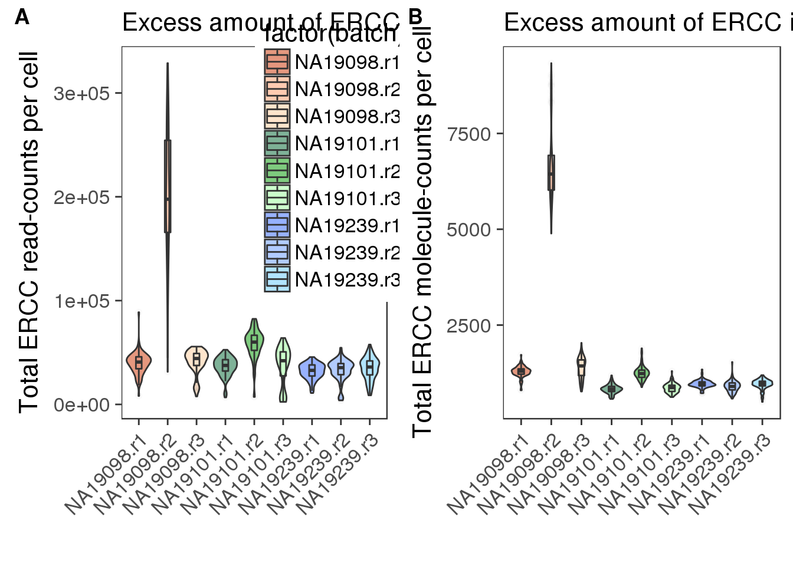 These plots show that in terms of the total read count and molecule count. NA19098.r2 had a large excess of ERCC per cell. We also see a lot more variability in the ERCC read and molecule counts in this sample/replicate.
Why could this be?
Understand ERCC RNA spike-ins by looking at the thermofisher documentation.
Purpose: RNA controlls for performance quality assessment (preformulated sets of 92 polyA transcripts from ERCC plasmid reference
Use: add Spike-in Mix to each sample (about 10^6-fold concentration)
Known mix1:mix2 ratios can be used to assess differencial gene expression
Note from paper on this: “It appeared that too much ERCC spike-in mix was added to each cell”
Remove NA19098r2 for all the following analsis:
remove_19098r2 <- anno$batch != "NA19098.r2"
anno_rm <- anno[remove_19098r2,]
summary_per_sample_reads_rm <- summary_per_sample_reads[remove_19098r2,]
reads_rm <- reads[, remove_19098r2]
molecules_rm <- molecules[, remove_19098r2]
stopifnot(summary_per_sample_reads_rm$sample_id == colnames(reads_rm))## add cell number per well by merging qc file
summary_per_sample_reads_qc <- merge(summary_per_sample_reads_rm,qc,by=c("individual","replicate","well"))
## calculate total mapped reads per sample
summary_per_sample_reads_qc$total_mapped <- apply(summary_per_sample_reads_qc[,5:7],1,sum)
## cut off
cut_off_reads <- quantile(summary_per_sample_reads_qc[summary_per_sample_reads_qc$cell_number == 0,"total_mapped"], 0.95)
cut_off_reads 95%
1556255 The cut off is the 95% percentile when there are 0 cells in the well. This is used to look for wells that appeared to have a cell but do not produce reads at the level expected for 1 cell. We are loooking for cells that were bad quality and therefore didn’t produce ample reads. 95% cuttoff was used troughtout the study but it is an arbutrary number.
summary_per_sample_reads_qc$cut_off_reads <- summary_per_sample_reads_qc$total_mapped > cut_off_reads
## numbers of cells
sum(summary_per_sample_reads_qc[summary_per_sample_reads_qc$cell_number == 1, "total_mapped"] > cut_off_reads)[1] 603Total mapped reads need to be higher than the 95% cuttoff found for 0 cell and the well needed to hold only one cell.
sum(summary_per_sample_reads_qc[summary_per_sample_reads_qc$cell_number == 1, "total_mapped"] <= cut_off_reads)[1] 96This is the number of wells that have 1 cell and have less than the 95% cut off for reads. In the data these cells act more like they did not have a cell in the well due to bad quality.
## density plots
plot_reads <- ggplot(summary_per_sample_reads_qc[summary_per_sample_reads_qc$cell_number == 0 |
summary_per_sample_reads_qc$cell_number == 1 , ],
aes(x = total_mapped, fill = as.factor(cell_number))) +
geom_density(alpha = 0.5) +
geom_vline(xintercept = cut_off_reads, colour="grey", linetype = "longdash") +
labs(x = "Total mapped reads per sample", title = "Cutoff based on the number of total mapped reads", fill = "Cell number")## calculate unmapped ratios
summary_per_sample_reads_qc$unmapped_ratios <- summary_per_sample_reads_qc[,8]/apply(summary_per_sample_reads_qc[,5:8],1,sum)
## cut off
cut_off_unmapped <- quantile(summary_per_sample_reads_qc[summary_per_sample_reads_qc$cell_number == 0,"unmapped_ratios"], 0.05)
cut_off_unmapped 5%
0.3640165 This is similar to the step above. We are looking for the lower 5% of unmapped reads when no cell was present in the well. This is because when no cell is present we will have a lot of unmapped reads that come from the spikeins.
summary_per_sample_reads_qc$cut_off_unmapped <- summary_per_sample_reads_qc$unmapped_ratios < cut_off_unmapped
## numbers of cells
sum(summary_per_sample_reads_qc[summary_per_sample_reads_qc$cell_number == 1, "unmapped_ratios"] >= cut_off_unmapped)[1] 101Now we look at the samples with 1 cell to see if they have more than the cuttoff of unmapped reads. This is to check mapping quality.
sum(summary_per_sample_reads_qc[summary_per_sample_reads_qc$cell_number == 1, "unmapped_ratios"] < cut_off_unmapped)[1] 598# density plots
plot_unmapped <- ggplot(summary_per_sample_reads_qc[summary_per_sample_reads_qc$cell_number == 0 |
summary_per_sample_reads_qc$cell_number == 1 , ],
aes(x = unmapped_ratios *100, fill = as.factor(cell_number))) +
geom_density(alpha = 0.5) +
geom_vline(xintercept = cut_off_unmapped *100, colour="grey", linetype = "longdash") +
labs(x = "Unmapped reads / Total reads per sample (%)", title = "Cutoff based on the percentage unmapped reads")## calculate ercc reads percentage
summary_per_sample_reads_qc$ercc_percentage <- apply(reads_rm[grep("ERCC", rownames(reads_rm)), ],2,sum)/apply(summary_per_sample_reads_qc[,5:7],1,sum)
## cut off
cut_off_ercc <- quantile(summary_per_sample_reads_qc[summary_per_sample_reads_qc$cell_number == 0,"ercc_percentage"], 0.05)
cut_off_ercc 5%
0.0323008 This is looking at the percent of reads that map to the ERCC spike ins. We are looking at the lower 5% because higher than that assumes too much of the sample was composed of ERCC mapping reads rather than sample reads.
summary_per_sample_reads_qc$cut_off_ercc <- summary_per_sample_reads_qc$ercc_percentage < cut_off_ercc
## numbers of cells
sum(summary_per_sample_reads_qc[summary_per_sample_reads_qc$cell_number == 1, "ercc_percentage"] >= cut_off_ercc)[1] 90sum(summary_per_sample_reads_qc[summary_per_sample_reads_qc$cell_number == 1, "ercc_percentage"] < cut_off_ercc)[1] 609## density plots
plot_ercc <- ggplot(summary_per_sample_reads_qc[summary_per_sample_reads_qc$cell_number == 0 |
summary_per_sample_reads_qc$cell_number == 1 , ],
aes(x = ercc_percentage *100, fill = as.factor(cell_number))) +
geom_density(alpha = 0.5) +
geom_vline(xintercept = cut_off_ercc *100, colour="grey", linetype = "longdash") +
labs(x = "ERCC reads / Total mapped reads per sample", title = "Cutoff based on the percentage of ERCC reads")## endogenous genes
reads_rm_gene <- reads_rm[grep("ENSG", rownames(reads_rm)), ]
## number of genes detected
summary_per_sample_reads_qc$gene_number <- colSums(reads_rm_gene >= 1)
## cut off
cut_off_genes <- quantile(summary_per_sample_reads_qc[summary_per_sample_reads_qc$cell_number == 0,"gene_number"], 0.95)
cut_off_genes 95%
6788.9 summary_per_sample_reads_qc$cut_off_genes <- summary_per_sample_reads_qc$gene_number > cut_off_genes
## numbers of cells
sum(summary_per_sample_reads_qc[summary_per_sample_reads_qc$cell_number == 1, "gene_number"] > cut_off_genes)[1] 629sum(summary_per_sample_reads_qc[summary_per_sample_reads_qc$cell_number == 1, "gene_number"] <= cut_off_genes)[1] 70## density plots
plot_gene <- ggplot(summary_per_sample_reads_qc[summary_per_sample_reads_qc$cell_number == 0 |
summary_per_sample_reads_qc$cell_number == 1 , ],
aes(x = gene_number, fill = as.factor(cell_number))) +
geom_density(alpha = 0.5) +
geom_vline(xintercept = cut_off_genes, colour="grey", linetype = "longdash") +
labs(x = "Gene numbers per sample", title = "Cutoff based on the number of detected genes")plot_grid(plot_reads + theme(legend.position=c(.7,.7)),
plot_unmapped + theme(legend.position = "none"),
plot_ercc + theme(legend.position = "none"),
plot_gene + theme(legend.position = "none"),
labels = LETTERS[3:6])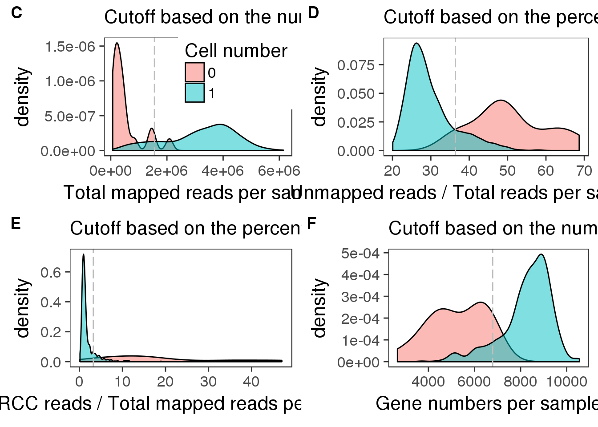
We should look at the numbers that fail in each of these tests. If they are similar we should see if the same cells make up that count in each of the tests. We would expect this if each of these are good tests for cell quality
## calculate total gene molecule counts
summary_per_sample_reads_qc$total_gene_molecule <- colSums(molecules_rm[grep("ENSG", rownames(molecules_rm)),])
## look for outiers
ggplot(summary_per_sample_reads_qc, aes(x = concentration, y = total_gene_molecule / 10^3,
color = as.factor(cell_number))) +
geom_text(aes(label = cell_number)) +
labs(x = "Concentration", y = "Gene molecules (thousands)") +
scale_color_brewer(palette = "Dark2") +
theme(legend.position = "none")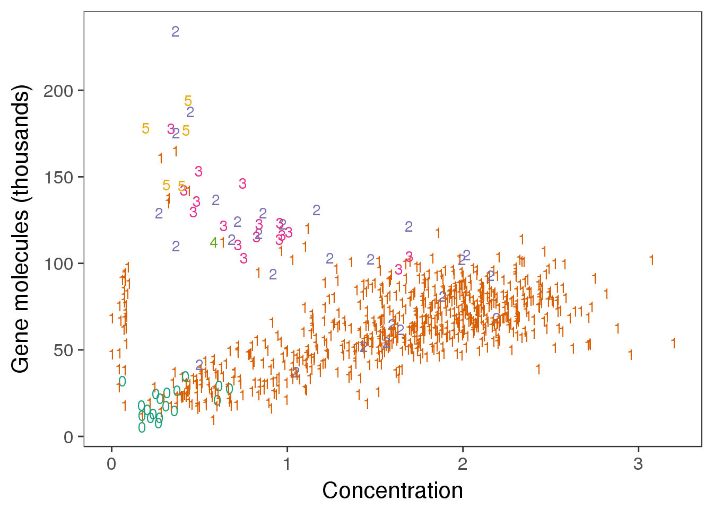
outliers <- summary_per_sample_reads_qc %>% filter(cell_number == 1, concentration < 1.25, concentration > .15,
total_gene_molecule > 100000)
#you could use code like this to look for the cells that failed the qc checks above.
outliers %>% dplyr::select(sample_id) sample_id
1 NA19098.r3.B04
2 NA19098.r3.B11
3 NA19101.r1.B10
4 NA19101.r2.D07
5 NA19101.r3.C07
6 NA19101.r3.D08
7 NA19101.r3.F05
8 NA19101.r3.F10
9 NA19239.r2.A12
10 NA19239.r2.B07Linear discrimination analysis:
releated to ANOVA
Use pattern recognition and machine learning to find linear combination of features that characterizes or separates two or more classes of objects or events
Use resulting combination for dimensional reduction
one dependent variable as a linear combinaton of other features
also like PCA- linear combination to best explain data
library(MASS)## create 3 groups according to cell number
group_3 <- rep("multiple cells",dim(summary_per_sample_reads_qc)[1])
group_3[grep("0", summary_per_sample_reads_qc$cell_number)] <- "no cells"
group_3[grep("1", summary_per_sample_reads_qc$cell_number)] <- "one cell"
## create data frame
data_lda <- data.frame(anno_rm,
cell_number = summary_per_sample_reads_qc$cell_number,
concentration = summary_per_sample_reads_qc$concentration,
total_gene_molecule = summary_per_sample_reads_qc$total_gene_molecule,
group = group_3)
## remove 19098.r1
data_con <- data_lda %>% filter(batch != "NA19098.r1")
plot_before <- ggplot(data_con, aes(x = concentration, y = total_gene_molecule / 10^3,
color = as.factor(group))) +
geom_text(aes(label = cell_number)) +
labs(x = "Sample concentration",
y = "Total gene molecule-count per sample (thousands)",
title = "Before linear discriminant analysis (LDA) \n A few samples with one cell (purple) \n clustered with samples with multiple cells (green)") +
scale_color_brewer(palette = "Dark2") +
theme(legend.position = "none")
## perform lda
data_con_lda <- lda(group ~ concentration + total_gene_molecule,
data = data_con)
#this analysis uses the group we gave and a function that looks at the number of cells we saw, the concentration of the well and the total molecules counts
data_con_lda_p <- predict(data_con_lda,
newdata = data_con[,c("concentration", "total_gene_molecule")])$class
#predict- predict results of a model fitting from varius model fitting functions
## determine how well the model fix
table(data_con_lda_p, data_con[, "group"])
data_con_lda_p multiple cells no cells one cell
multiple cells 34 0 10
no cells 0 1 0
one cell 15 16 596data_con$data_con_lda_p <- data_con_lda_p
plot_after <- ggplot(data_con, aes(x = concentration, y = total_gene_molecule / 10^3,
color = as.factor(data_con_lda_p))) +
geom_text(aes(label = cell_number)) +
labs(x = "Sample concentration",
y = "Total gene molecule-count per sample (thousands)",
title = "After linear discriminant analysis (LDA) \n Removal of samples classified as \n samples with multiple cells (green)") +
scale_color_brewer(palette = "Dark2") +
theme(legend.position = "none")
## identify the outlier
outliers_lda <- data_con %>% filter(cell_number == 1, data_con_lda_p == "multiple cells")
outliers_lda$sample_id [1] "NA19098.r3.B04" "NA19098.r3.B11" "NA19101.r1.B10" "NA19101.r2.D07"
[5] "NA19101.r3.C07" "NA19101.r3.D08" "NA19101.r3.F05" "NA19101.r3.F10"
[9] "NA19239.r2.A12" "NA19239.r2.B07"## The lds method identifies outliers
plot_grid(plot_before + theme(legend.position=c(.8,.85)),
plot_after + theme(legend.position = "none"),
labels = LETTERS[1:2])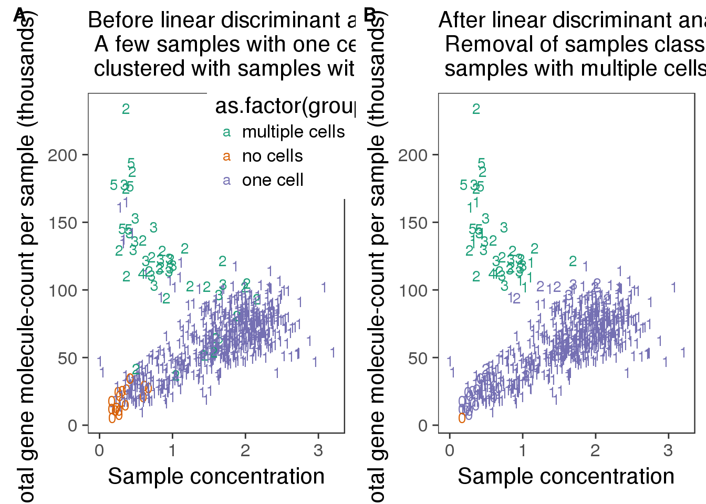
## create filter
summary_per_sample_reads_qc$molecule_outlier <- summary_per_sample_reads_qc$sample_id %in% outliers_lda$sample_id## calculate convertion
summary_per_sample_reads_qc$ERCC_conversion <- summary_per_sample_reads_qc$ERCC_molecules / summary_per_sample_reads_qc$ERCC_reads
summary_per_sample_reads_qc$conversion <- summary_per_sample_reads_qc$total_gene_molecule / colSums(reads_rm[grep("ENSG", rownames(reads_rm)),])
ggplot(summary_per_sample_reads_qc, aes(x = ERCC_conversion, y = conversion,
color = as.factor(cell_number))) +
geom_text(aes(label = cell_number)) +
labs(x = "Conversion of ERCC", y = "Conversion of genes") +
scale_color_brewer(palette = "Dark2") +
theme(legend.position = "none")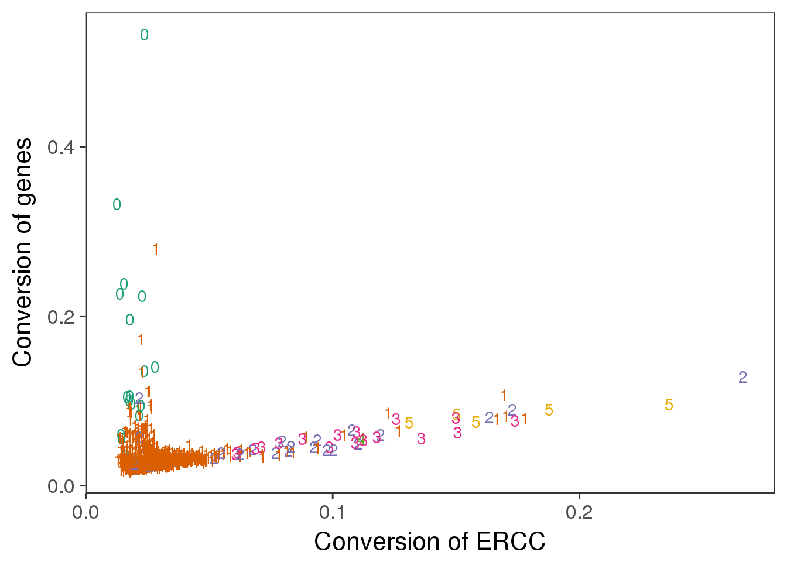
out_ercc_con <- summary_per_sample_reads_qc %>% filter(cell_number == "1", ERCC_conversion > .094)
## try lda
data_lda$conversion <- summary_per_sample_reads_qc$conversion
data_lda$ERCC_conversion <- summary_per_sample_reads_qc$ERCC_conversion
data_ercc_lda <- lda(group ~ ERCC_conversion + conversion,
data = data_lda)
data_ercc_lda_p <- predict(data_ercc_lda,
newdata = data_lda[,c("ERCC_conversion", "conversion")])$class
table(data_con_lda_p, data_con[, "group"])
data_con_lda_p multiple cells no cells one cell
multiple cells 34 0 10
no cells 0 1 0
one cell 15 16 596data_lda$data_ercc_lda_p <- data_ercc_lda_p
## identify the outlier
outliers_ercc <- data_lda %>% filter(cell_number == 1, data_ercc_lda_p == "multiple cells")
outliers_ercc$sample_id [1] "NA19098.r1.F01" "NA19098.r3.B04" "NA19098.r3.B11" "NA19101.r2.D07"
[5] "NA19101.r3.C07" "NA19101.r3.D08" "NA19101.r3.F05" "NA19101.r3.F10"
[9] "NA19239.r2.A12" "NA19239.r2.B07" "NA19239.r3.G02"This gives the samples that look like they had one cell but act like they had more than one in the LDA analysis of ercc conversion.
## cutoff
out_ercc_con <- summary_per_sample_reads_qc %>% filter(cell_number == "1", ERCC_conversion > .08)
## create filter
summary_per_sample_reads_qc$conversion_outlier <- summary_per_sample_reads_qc$sample_id %in% outliers_ercc$sample_id
plot_ercc_before <- ggplot(data_lda, aes(x = ERCC_conversion, y = conversion,
color = as.factor(group))) +
geom_text(aes(label = cell_number)) +
labs(x = "Read-to-molecule conversion of ERCC",
y = "Read-to-molecule conversion of genes",
title = "Before linear discriminant analysis (LDA) \n A few samples with one cell (purple) \n clustered with samples with multiple cells (green)") +
scale_color_brewer(palette = "Dark2") +
theme(legend.position = "none")
plot_ercc_after <- ggplot(data_lda, aes(x = ERCC_conversion, y = conversion,
color = as.factor(data_ercc_lda_p))) +
geom_text(aes(label = cell_number)) +
labs(x = "Read-to-molecule conversion of ERCC",
y = "Read-to-molecule conversion of genes",
title = "After linear discriminant analysis (LDA) \n Removal of samples classified as \n samples with multiple cells (green)") +
scale_color_brewer(palette = "Dark2") +
theme(legend.position = "none")
plot_grid(plot_ercc_before,
plot_ercc_after,
labels = LETTERS[3:4])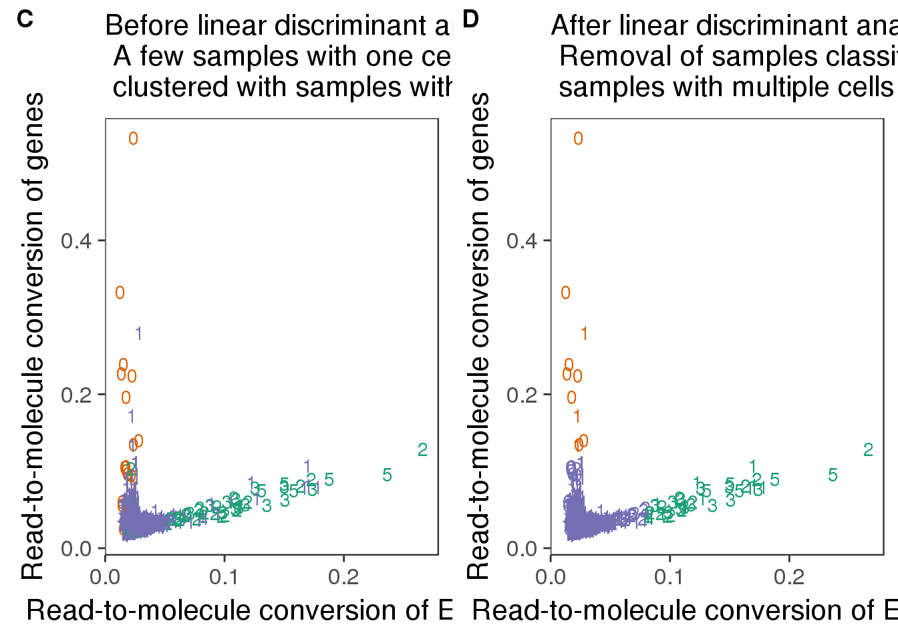
## create a list of mitochondrial genes (13 protein-coding genes)
## MT-ATP6, MT-CYB, MT-ND1, MT-ND4, MT-ND4L, MT-ND5, MT-ND6, MT-CO2, MT-CO1, MT-ND2, MT-ATP8, MT-CO3, MT-ND3
mtgene <- c("ENSG00000198899", "ENSG00000198727", "ENSG00000198888", "ENSG00000198886", "ENSG00000212907", "ENSG00000198786", "ENSG00000198695", "ENSG00000198712", "ENSG00000198804", "ENSG00000198763","ENSG00000228253", "ENSG00000198938", "ENSG00000198840")
## reads of mt genes in single cells
mt_reads <- reads_rm_gene[mtgene,]
dim(mt_reads)[1] 13 768stopifnot(colnames(reads_rm) == rownames(summary_per_sample_reads_qc$sample_id))
## mt ratio of single cell
summary_per_sample_reads_qc$mt_reads <- apply(mt_reads, 2, sum)
summary_per_sample_reads_qc$mt_reads_ratio <- summary_per_sample_reads_qc$mt_reads /summary_per_sample_reads_qc$total_mapped
## vs. number of genes detected
ggplot(summary_per_sample_reads_qc,
aes(x = gene_number, y = mt_reads_ratio,
color = as.factor(cell_number))) +
geom_text(aes(label = cell_number)) +
labs(x = "Number of genes", y = "Mitochondrial ratio") +
scale_color_brewer(palette = "Dark2") +
theme(legend.position = "none")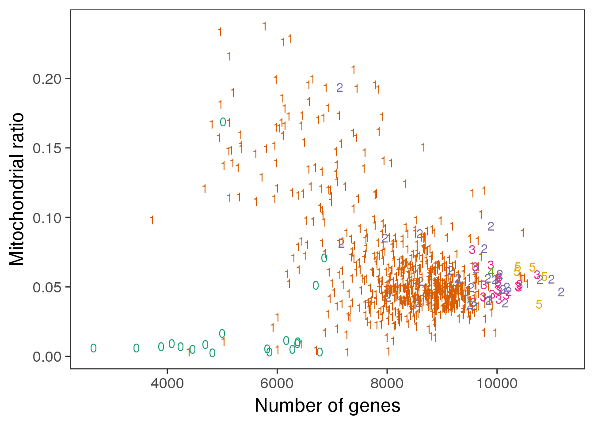
## all filter
summary_per_sample_reads_qc$filter_all <- summary_per_sample_reads_qc$cell_number == 1 &
summary_per_sample_reads_qc$cut_off_reads &
summary_per_sample_reads_qc$cut_off_unmapped &
summary_per_sample_reads_qc$cut_off_ercc &
summary_per_sample_reads_qc$cut_off_genes &
summary_per_sample_reads_qc$molecule_outlier == "FALSE" &
summary_per_sample_reads_qc$conversion_outlier == "FALSE"
table(summary_per_sample_reads_qc[summary_per_sample_reads_qc$filter_all,
c("individual", "replicate")]) replicate
individual r1 r2 r3
NA19098 85 0 57
NA19101 80 70 51
NA19239 74 68 79This uses the information we found above to filter cells out of the analysis. The list created is the number of wells that passes all QC filters.
stopifnot(nrow(summary_per_sample_reads_qc) == nrow(anno_rm))
quality_single_cells <- anno_rm %>%
filter(summary_per_sample_reads_qc$filter_all) %>%
dplyr :: select(sample_id)
write.table(quality_single_cells,
file = "../../cell-cycle/data/quality-single-cells.txt", quote = FALSE,
sep = "\t", row.names = FALSE, col.names = FALSE)I wrote the quality single cells file to the data directory in my cell cycle git hub project.
ggplot(summary_per_sample_reads_qc,
aes(x = gene_number, y = mt_reads_ratio,
color = as.factor(filter_all))) +
geom_text(aes(label = cell_number)) +
labs(x = "Number of genes", y = "Mitochondrial ratio") +
theme(legend.position = "none")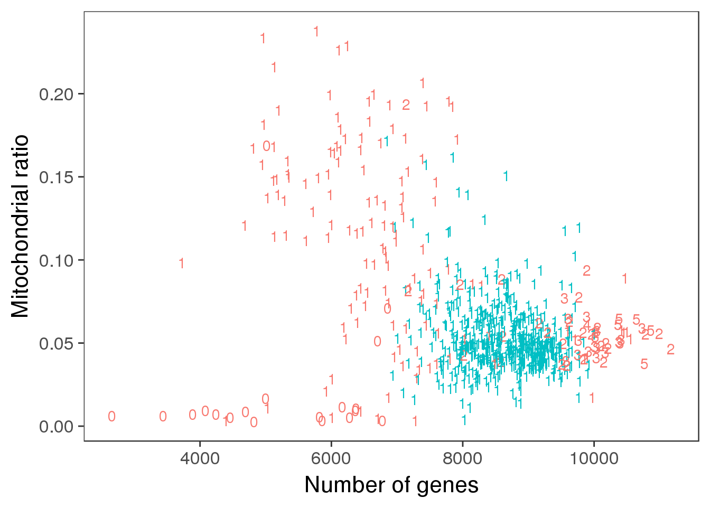
ggplot(summary_per_sample_reads_qc[summary_per_sample_reads_qc$cell_number == 1,],
aes(x = factor(filter_all), y = mt_reads_ratio,
fill = factor(filter_all)), height = 600, width = 2000) +
geom_violin(alpha = .5) +
geom_boxplot(alpha = .01, width = .2, position = position_dodge(width = .9)) +
labs(x = "Quality", y = "Mitochonrial ratio", title = "Mitochondrial ratio of libraries with 1 cell")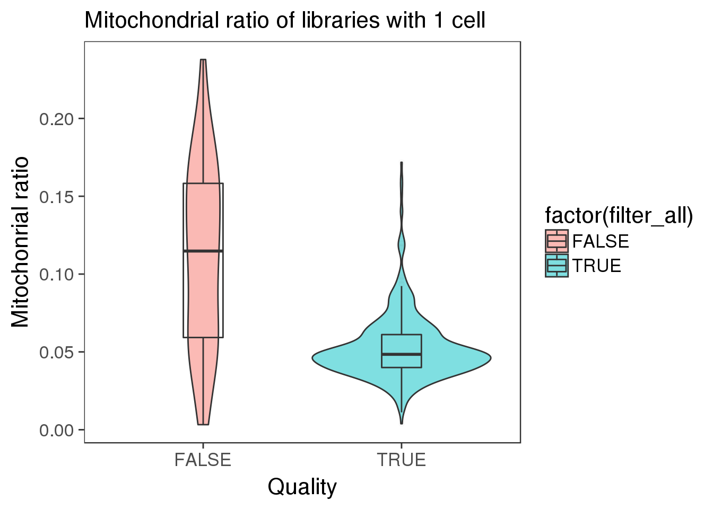
Filter describes weather the well made ti past the above QC filter step.
## check the batch of those outliers
mito_outliers <- summary_per_sample_reads_qc %>% filter(filter_all == "TRUE", mt_reads_ratio > .15)
mito_outliers %>% dplyr::select(sample_id, mt_reads_ratio) sample_id mt_reads_ratio
1 NA19098.r1.D07 0.1573689
2 NA19098.r3.G03 0.1618823
3 NA19098.r3.G04 0.1508871
4 NA19101.r3.A09 0.1718202These are the top outliers in the true graph in terms of mitochondrial read ratios. 3 of the4 come from individual 19098so we will look further into this.
## check if 19098 have high mt genes
ggplot(summary_per_sample_reads_qc[summary_per_sample_reads_qc$filter_all == "TRUE",],
aes(x = factor(batch), y = mt_reads_ratio,
fill = factor(batch)), height = 600, width = 2000) +
geom_violin(alpha = .5) +
geom_boxplot(alpha = .01, width = .2, position = position_dodge(width = .9)) +
scale_fill_manual(values = great_color_8) +
labs(x = "batch", y = "Mitochondrial ratio") +
theme(axis.text.x = element_text(hjust=1, angle = 45))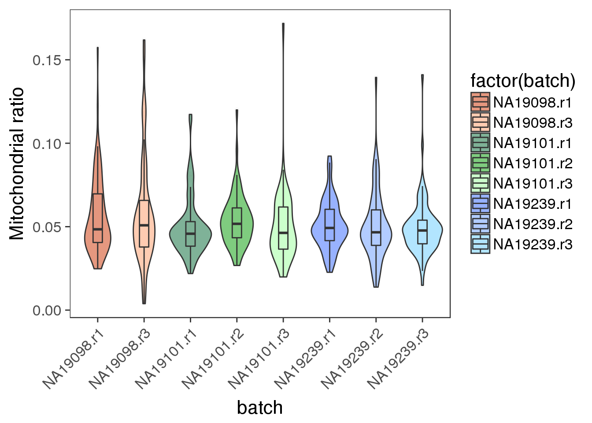
The plots show that at an individual scale we dont see an increase in the mitochondrial gene ratio for 19098.
Do we have an expected mitochondrial gene ratio for the data?
This shows all of the QC plots that were created in this analysis file.
genes_unmapped <- ggplot(summary_per_sample_reads_qc,
aes(x = gene_number, y = unmapped_ratios * 100,
col = as.factor(individual), height = 600, width = 2000)) +
geom_point(size = 3, alpha = 0.3) +
geom_vline(xintercept = cut_off_genes, colour="grey", linetype = "longdash") +
geom_hline(yintercept = cut_off_unmapped * 100, colour="grey", linetype = "longdash") +
labs(x = "Number of detected genes / sample",
y = "Percentage of unmapped reads in each sample (%)",
title = "Number of genes detected as \n expressed as a function of \n the proportion of mapped reads")
genes_ercc <- ggplot(summary_per_sample_reads_qc,
aes(x = gene_number, y = ercc_percentage * 100,
col = as.factor(individual), shape = as.factor(replicate), height = 600, width = 2000)) +
geom_point(size = 3, alpha = 0.3) +
geom_vline(xintercept = cut_off_genes, colour="grey", linetype = "longdash") +
geom_hline(yintercept = cut_off_ercc * 100, colour="grey", linetype = "longdash") +
labs(x = "Number of detected genes / sample",
y = "Percentage of ERCC reads in each sample (%)",
title = "Samples with zero cell \n (visual inspection) have \n low number of reads")
reads_unmapped_num <- ggplot(summary_per_sample_reads_qc,
aes(x = total_mapped, y = unmapped_ratios * 100,
col = as.factor(individual), label = as.character(cell_number), height = 600, width = 2000)) +
geom_text(fontface = 3, alpha = 0.5) +
geom_vline(xintercept = cut_off_reads, colour="grey", linetype = "longdash") +
geom_hline(yintercept = cut_off_unmapped * 100, colour="grey", linetype = "longdash") +
labs(x = "Total mapped reads / sample",
y = "Percentage of unmapped reads in each sample (%)",
title = "Samples with zero cells \n (visual inspection) have \n high proportion of unmapped reads")
reads_ercc_num <- ggplot(summary_per_sample_reads_qc,
aes(x = total_mapped, y = ercc_percentage * 100,
col = as.factor(individual), label = as.character(cell_number), height = 600, width = 2000)) +
geom_text(fontface = 3, alpha = 0.5) +
geom_vline(xintercept = cut_off_reads, colour="grey", linetype = "longdash") +
geom_hline(yintercept = cut_off_ercc * 100, colour="grey", linetype = "longdash") +
labs(x = "Total mapped reads / sample",
y = "Percentage of ERCC reads in each sample (%)",
title = "Samples with zero cells \n (visual inspection) have \n high proportion of ERCC reads")
plot_grid(genes_unmapped + theme(legend.position = "none"),
genes_ercc + theme(legend.position = "none"),
reads_unmapped_num + theme(legend.position = "none"),
reads_ercc_num + theme(legend.position = "none"),
labels = letters[1:4])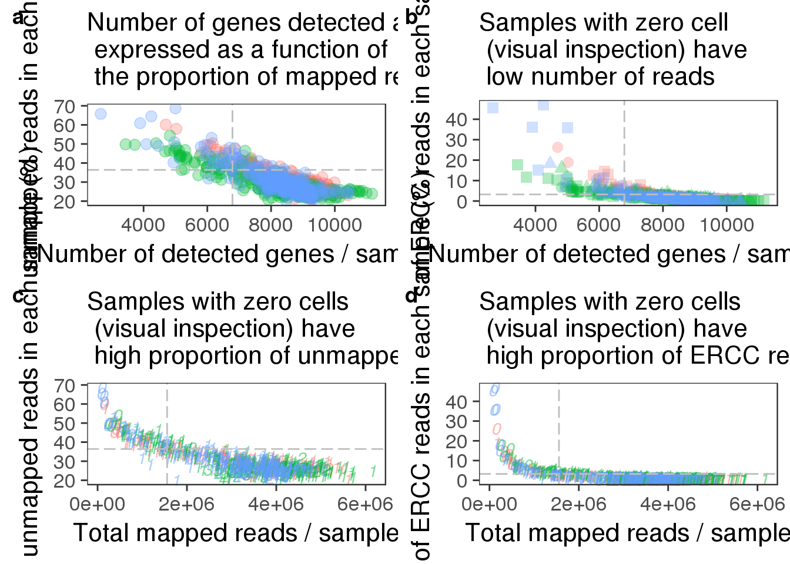
plot_grid(genes_unmapped + theme(legend.position = c(.75,.9)) + labs(col = "Individual"),
reads_unmapped_num + theme(legend.position = "none"),
reads_ercc_num + theme(legend.position = "none"),
labels = letters[3:5],
nrow = 1)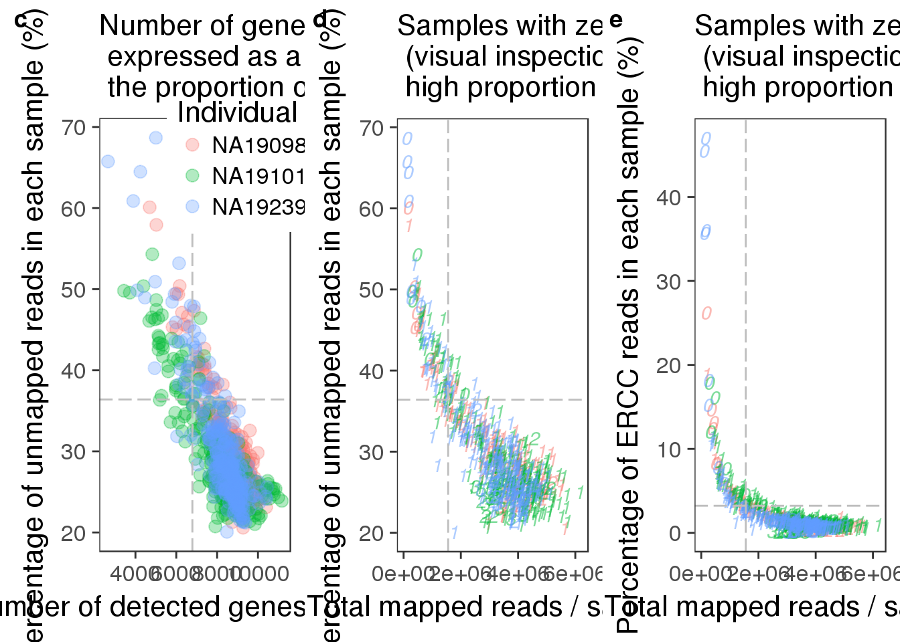
plot_grid(ercc_reads_plot + theme(legend.position = "none"),
ercc_molecule_plot + theme(legend.position = "none"),
plot_reads + theme(legend.position=c(.8,.85)),
plot_unmapped + theme(legend.position = "none"),
plot_ercc + theme(legend.position = "none"),
plot_gene + theme(legend.position = "none"),
labels = letters[1:6],
ncol = 2)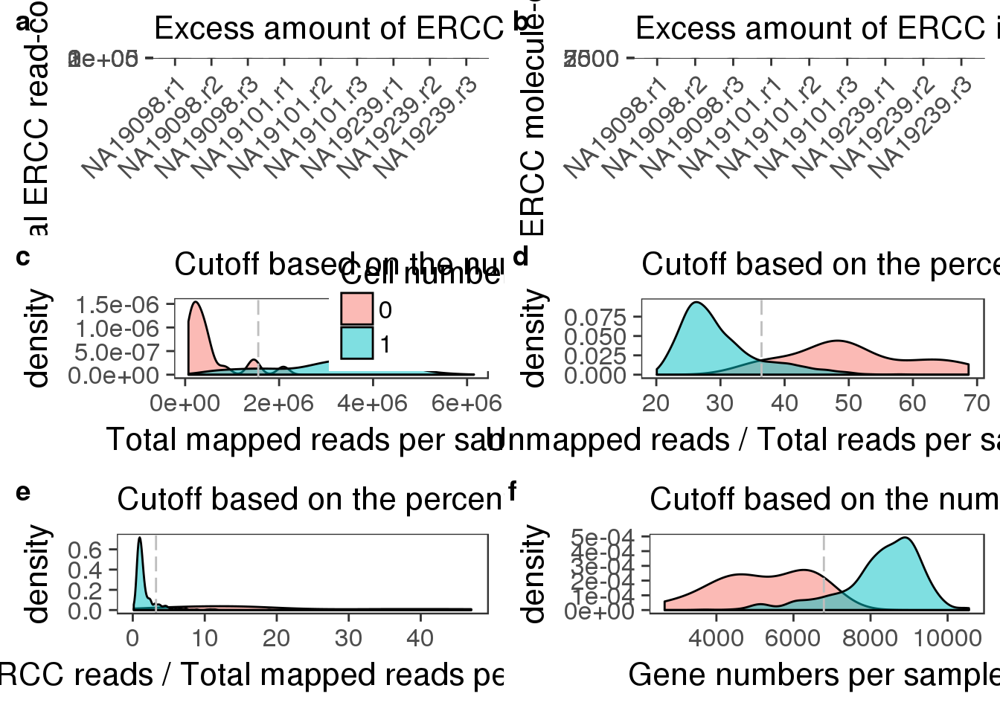
plot_grid(plot_before + theme(legend.position=c(.85,.85)) + labs(col = "Cell number"),
plot_after + theme(legend.position = "none"),
plot_ercc_before,
plot_ercc_after,
labels = letters[1:4])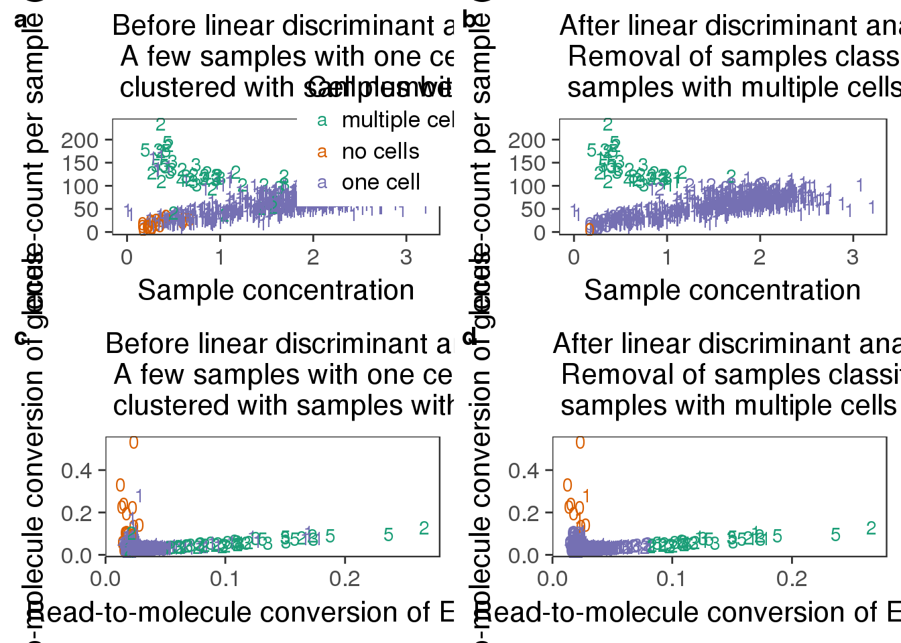
In this analysis we performed QC by checking the following criteria:
Total reads in 0 cell wells
Proportion of mapped reads
ERCC read proportions
Number of genes
Total ERCC read counts
LDA analysis for multiple cells in one well
Conversion ratios for genes and ERCCs
Mitochondrial read ratios
sessionInfo()R version 3.3.2 (2016-10-31)
Platform: x86_64-redhat-linux-gnu (64-bit)
Running under: Scientific Linux 7.2 (Nitrogen)
locale:
[1] LC_CTYPE=en_US.UTF-8 LC_NUMERIC=C
[3] LC_TIME=en_US.UTF-8 LC_COLLATE=en_US.UTF-8
[5] LC_MONETARY=en_US.UTF-8 LC_MESSAGES=en_US.UTF-8
[7] LC_PAPER=en_US.UTF-8 LC_NAME=C
[9] LC_ADDRESS=C LC_TELEPHONE=C
[11] LC_MEASUREMENT=en_US.UTF-8 LC_IDENTIFICATION=C
attached base packages:
[1] parallel stats4 grid stats graphics grDevices utils
[8] datasets methods base
other attached packages:
[1] mygene_1.10.0 GenomicFeatures_1.26.3 GenomicRanges_1.26.3
[4] GenomeInfoDb_1.10.3 broman_0.65-1 gplots_3.0.1
[7] matrixStats_0.51.0 MASS_7.3-45 gridExtra_2.2.1
[10] lme4_1.1-12 workflowr_0.4.0 org.Hs.eg.db_3.4.0
[13] GOstats_2.40.0 graph_1.52.0 Category_2.40.0
[16] Matrix_1.2-7.1 GO.db_3.4.0 AnnotationDbi_1.36.2
[19] IRanges_2.8.1 S4Vectors_0.12.1 Biobase_2.34.0
[22] BiocGenerics_0.20.0 Humanzee_0.1.0 sva_3.22.0
[25] genefilter_1.56.0 mgcv_1.8-15 nlme_3.1-128
[28] BiocInstaller_1.24.0 scales_0.4.1 VennDiagram_1.6.17
[31] futile.logger_1.4.3 edgeR_3.16.5 limma_3.30.11
[34] dplyr_0.5.0 testit_0.6 data.table_1.10.4
[37] biomaRt_2.30.0 cowplot_0.7.0 stringr_1.2.0
[40] reshape2_1.4.2 rmarkdown_1.3 Citrus_0.99
[43] easyGgplot2_1.0.0.9000 ggplot2_2.2.1
loaded via a namespace (and not attached):
[1] minqa_1.2.4 colorspace_1.3-2
[3] rprojroot_1.2 htmlTable_1.9
[5] XVector_0.14.0 base64enc_0.1-3
[7] rstudioapi_0.6 sqldf_0.4-10
[9] splines_3.3.2 knitr_1.15.1
[11] Formula_1.2-1 jsonlite_1.3
[13] nloptr_1.0.4 Rsamtools_1.26.1
[15] annotate_1.52.1 cluster_2.0.5
[17] httr_1.2.1 backports_1.0.5
[19] assertthat_0.1 lazyeval_0.2.0
[21] acepack_1.4.1 htmltools_0.3.5
[23] tools_3.3.2 gtable_0.2.0
[25] Rcpp_0.12.9 Biostrings_2.42.1
[27] gdata_2.17.0 rtracklayer_1.34.2
[29] proto_1.0.0 gtools_3.5.0
[31] devtools_1.12.0 statmod_1.4.29
[33] XML_3.98-1.5 zlibbioc_1.20.0
[35] SummarizedExperiment_1.4.0 RBGL_1.50.0
[37] lambda.r_1.1.9 RColorBrewer_1.1-2
[39] yaml_2.1.14 curl_2.3
[41] memoise_1.0.0 rpart_4.1-10
[43] latticeExtra_0.6-28 stringi_1.1.2
[45] RSQLite_1.1-2 checkmate_1.8.2
[47] caTools_1.17.1 BiocParallel_1.8.1
[49] chron_2.3-50 bitops_1.0-6
[51] evaluate_0.10 lattice_0.20-34
[53] htmlwidgets_0.8 GenomicAlignments_1.10.0
[55] labeling_0.3 GSEABase_1.36.0
[57] AnnotationForge_1.16.1 plyr_1.8.4
[59] magrittr_1.5 R6_2.2.0
[61] Hmisc_4.0-2 DBI_0.5-1
[63] gsubfn_0.6-6 foreign_0.8-67
[65] withr_1.0.2 survival_2.40-1
[67] RCurl_1.95-4.8 nnet_7.3-12
[69] tibble_1.2 futile.options_1.0.0
[71] KernSmooth_2.23-15 locfit_1.5-9.1
[73] git2r_0.18.0 digest_0.6.12
[75] xtable_1.8-2 munsell_0.4.3 This site was created with R Markdown